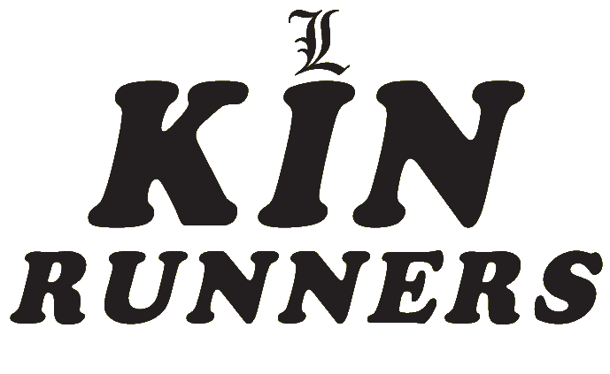
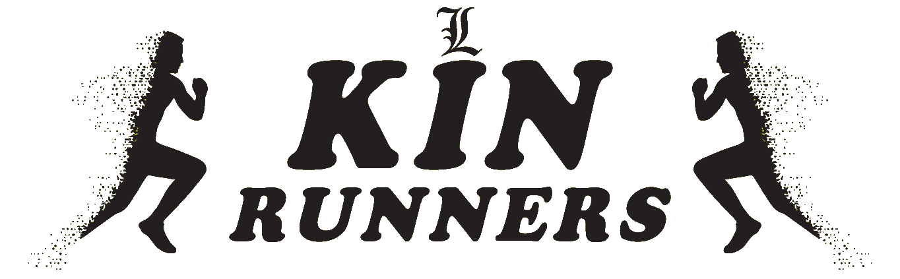

SIN ESFUERZO, NO HAY RUNNING
Conóceme
SIN ESFUERZO, NO HAY RUNNING
ConócemeEl entrenamiento funcional ayuda al cuerpo mediante la simulación de actividades cotidianas que mejoran en el equilibrio, la coordinación, agilidad y resistencia, mientras nos ayuda a perder grasa y tonificarnos, mejorando nuestra imagen y ayudándonos a tener un estilo de vida más saludable
Si eres un amante del running o quieres empezar a correr, debes saber que una tabla de entrenamiento para correr te ayudará a conseguir tu meta en un plazo de tiempo más reducido. En cambio, si decides aventurarte a la carrera sin un plan específico es más probable abandonar y lesionarse que triunfar.
La vida al aire libre ejercitada en forma de paseos, caminatas, acampadas, la playa, el senderismo entre otras opciones, nos brindan la posibilidad de disfrutar de la naturaleza y muchos de sus beneficios
Mi nombre es Luciano Leyton, Entrenador Profesional ligado al deporte en empresas dentro de las que destaco: entrenador de la selección femenina de Lan Chile, Monitor de Escuela en Lan Airlines, Preparador Físico en el Instituto de salud pública (ISP), Entrenador de la escuela de fútbol USACH., Entrenador en Chilectra y Entrenador de la Selección de Fútbol de la Municipalidad de las Condes.
Junto con mi extensa carrera profesional en el ámbito deportivo, destaco mi carrera de 27 años en el Running, en la cual represente a la USACH en diferentes países de Centro América y Campeonatos Internacionales. Me destaque en tres oportunidades como campeón nacional en Maratón e innumerables ocasiones en especialidades de fondo como 5.000, 10.000 y 21.000 mts. participando en dos sudamericanos.
Podes ponerte en contacto conmigo a través de Facebook, Linkedin o completando el formulario de contacto que se encuentra al final del sitio web.
VER MIS TRABAJOSEntrenar en un Grupo, además de cumplir con los objetivos de salud, te permite mejorar tu calidad de vida y tu rendimiento deportivo, ir a correr una carrera, ir a acompañar, ir a pararse en una esquina a esperar a los compañeros de equipo, pasar frío o mojarse esperando la llegada de «el que entrena conmigo». Esto último es lo que más disfrutan los integrantes de estos grupos.
Además, entrenar de esta forma te facilita salir a correr, que es lo que nos gusta. Dejar los nervios en la oficina o en casa y empezar a disfrutar de algo que hacemos porque queremos, porque es saludable, porque nos hace conocer gente, porque nos mantiene vivos y sanos.
Ser integrante de un Running team te permite todo esto, más allá de cualquier resultado deportivo.
Una encuesta de la consultora Neder indica que casi la mitad de los entrena en grupo; la motivación y la compañía en la dificultad son los principales beneficios que mencionan. El 82% se motiva más que entrenando solo; el 79% soporta más el entrenamiento duro y el 46% se divierte.
En conclusión, correr con otros se hace más llevadero y divertido. Entrenar en grupo hace que entrenemos igual incluso cuando no tenemos ganas de hacerlo.